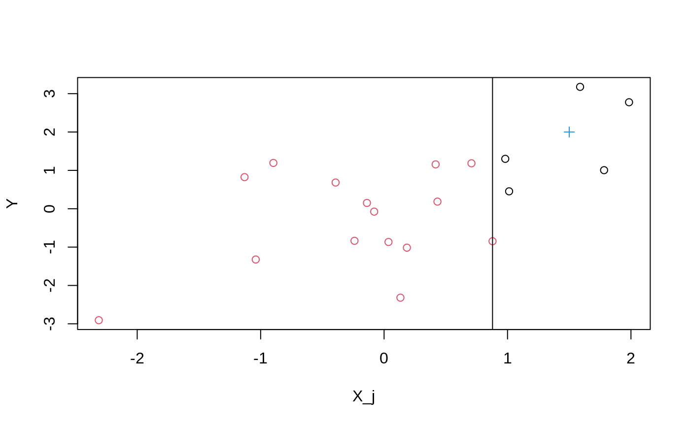
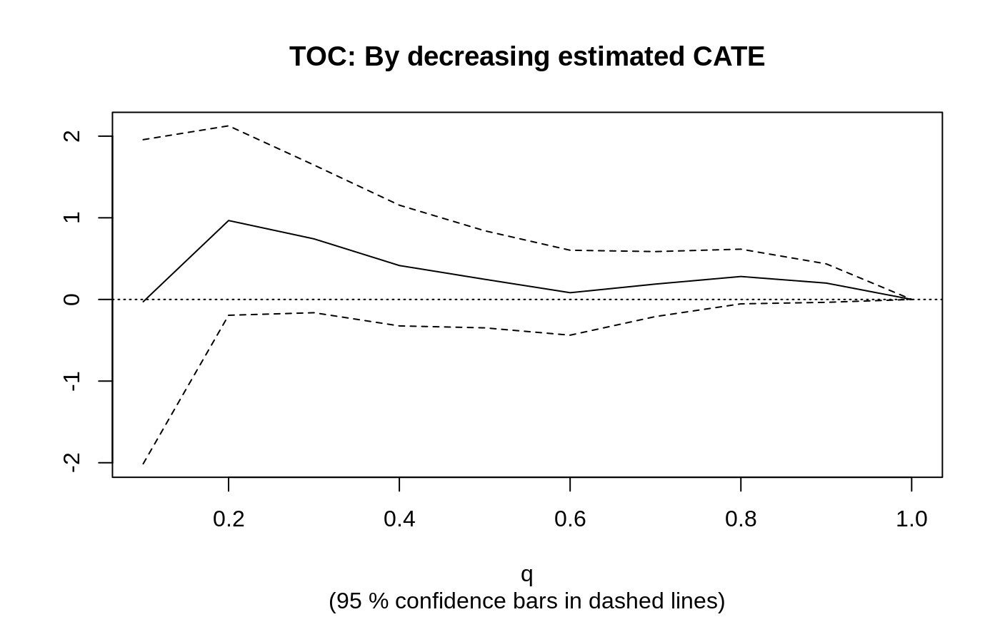
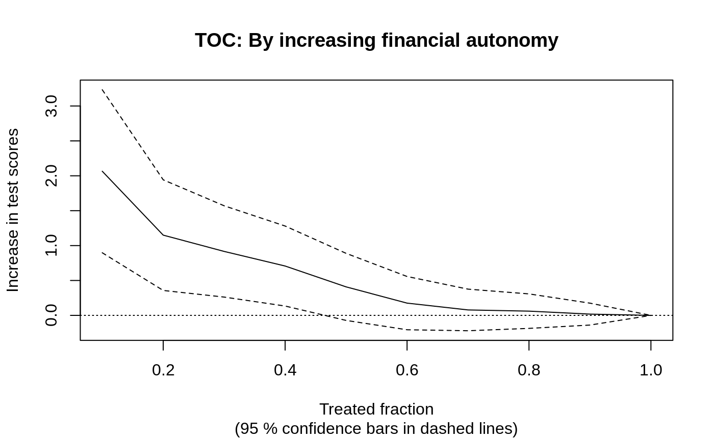
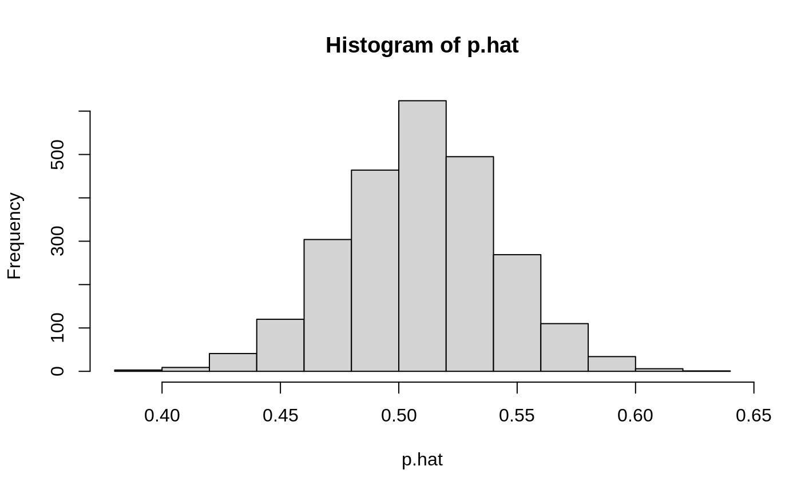
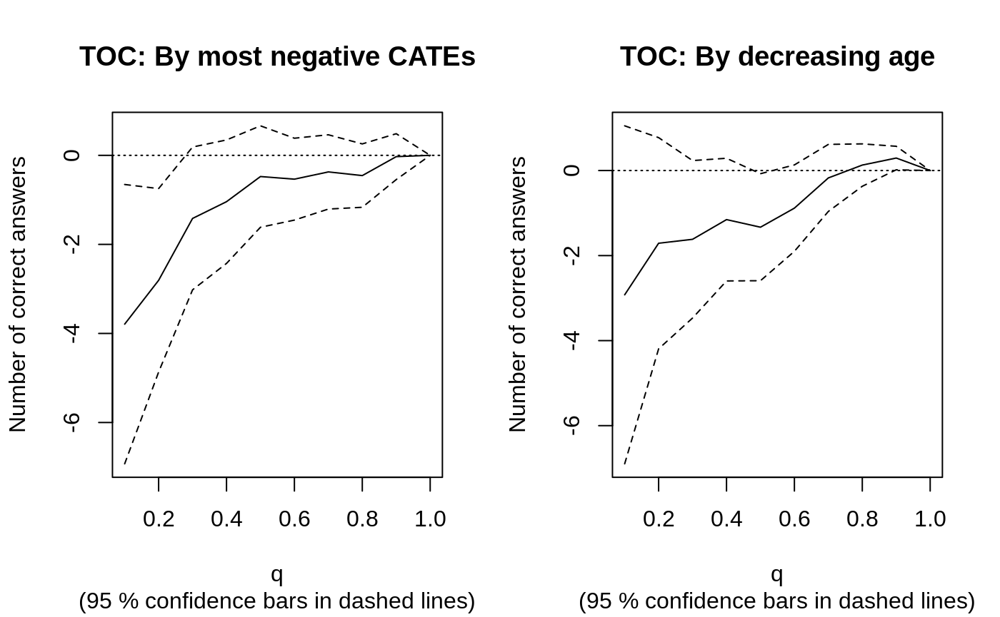

library(grf)
This vignette gives a brief overview of the GRF algorithm and contains two example applications: 1) The benefits of a financial education program and 2) Measuring the effect of poverty on attention, which walks through using GRF to estimate conditional average treatment effects (CATEs) using:
The best_linear_projection as simple linear association measures which can provide a useful lower dimensional summary of the CATEs, that has desirable semi-parametric inferential properties.
The rank_average_treatment_effect (RATE) as a generic tool to assess heterogeneity and the effectiveness of “targeting rules”, as well as how the associated TOC curve can help identify segments of a population that respond differently to a treatment.
policytree to find a tree-based policy using the estimated CATEs.
A grf overview
This section gives a lightning tour of some of the conceptual ideas behind GRF in the form of a walkthrough of how Causal Forest works. It starts with describing how the predictive capabilities of the modern machine learning toolbox can be leveraged to non-parametrically control for confounding when estimating average treatment effects, and how Breiman’s (2001) random forest can be repurposed as an adaptive nearest neighbor finder to detect treatment effect heterogeneity.
Machine learning for causal inference
Machine learning algorithms are great at prediction. In the context of estimating treatment effects, however, what matters is estimation and inference (for a great overview of the fundamental tension between prediction and estimation, see the essay by Efron (2020)). The following section outlines how, if carefully adapted and paired with best practices from semi-parametric statistics, modern machine learning can be used to augment the causal inference toolbox with more model-agnostic tools.
Imagine we observe outcomes \(Y_i\) along with a binary treatment indicator \(W=\{0, 1\}\) and are interested in measuring the average causal effect of the intervention on the outcome. If we are not in a randomized control trial setting but have collected a set of covariates \(X_i\) which we believe could plausibly account for confounding, then we could run a regression of the type (Imbens & Rubin, 2005)
\[ Y_i \sim \tau W_i + \beta X_i, \] and interpret the estimated \(\hat \tau\) as an estimate of the average treatment effect \(\tau = E[Y_i(1) - Y_i(0)]\), where \(Y_i(1), Y_i(0)\) are potential outcomes corresponding to the two treatment states. This approach is justified if:
- \(W_i\) is unconfounded given \(X_i\) (i.e., treatment is as good as random given covariates).
- The confounders \(X_i\) have a linear effect on \(Y_i\).
- The treatment effect \(\tau\) is constant.
Assumption 1) is an “identifying” assumption we have to live with, however 2) and 3) are modeling assumptions that we can question. Let’s start with assumption 2): this is a strong parametric modeling assumption that requires the confounders to have a linear effect on the outcome, and that we should be able to relax by relying on semi-parametric statistics.
Relaxing assumption 1). We can instead posit the partially linear model:
\[ Y_i = \tau W_i + f(X_i) + \varepsilon_i, \, \, E[\varepsilon_i | X_i, W_i] = 0, \] where we assume a unit’s baseline outcome is given by some unknown (possibly complex) function \(f\), and that a treatment assignment shifts the outcome by a constant offset \(\tau\). But how do we get around estimating \(\tau\) when we do not know \(f(X_i)\)? Robinson (1988) shows that, if we define the following two intermediary objects:
\[ e(x) = E[W_i | X_i=x], \] the propensity score, and
\[ m(x) = E[Y_i | X_i = x] = f(x) + \tau e(x), \] the conditional mean of \(Y\), then we can rewrite the above equation in “centered” form:
\[ Y_i - m(x) = \tau (W_i - e(x)) + \varepsilon_i. \] This formulation has great practical appeal, as it means \(\tau\) can be estimated by residual-on-residual regression: plug in estimates of \(m(x)\) and \(e(x)\) then regress the centered outcomes on the centered treatment indicator. Robinson (1988) shows that this approach yields root-n consistent estimates of \(\tau\), even if estimates of \(m(x)\) and \(e(x)\) converge at a slower rate (“4-th root” in particular). This property is often referred to as orthogonality and is a desirable property that essentially tells you that given noisy “nuisance” estimates (\(m(x)\) and \(e(x)\)) you can still recover “good” estimates of your target parameter (\(\tau\)).
But how are you supposed to estimate \(m(x)\) and \(e(x)\), don’t you still have to posit a parametric model (like for example a logistic regression for the propensity score)? This is where the modern machine learning toolkit comes in handy, by recognizing that for \(m(x)\) and \(e(x)\) we are only asking for good predictions of the outcome conditional on \(X_i\), and the treatment assignment conditional on \(X_i\). This is the type of problem modern machine learning methods like boosting, random forests, etc., excel at. Directly plugging in estimates of \(m(x)\) and \(e(x)\) into the residual-on-residual regression will typically lead to bias as modern ML methods regularize to trade of bias and variance, however, Zheng & van der Laan (2011) and Chernozhukov et al. (2018) show that if you form these estimates in a “cross-fit” manner, meaning the prediction of observation i’s outcome and treatment assignment is obtained without using unit i for estimation, then (given some regularity assumptions) you can still recover root-n consistent estimates of \(\tau\).
So, to recap so far: we have a way to adopt the modern ML toolkit to non-parametrically control for confounding when estimating an average treatment effect, and still retain desirable statistical properties such as unbiasedness and consistency.
Non-constant treatment effects. What if we wish to relax assumption 3)? We could specify certain subgroups and run separate regressions for each subgroup and obtain different estimates of \(\tau\). To avoid false discoveries, this approach would require us to specify potential subgroups without looking at the data. How can we use the data to inform us of potential subgroups? We can continue with Robinson’s partially linear model from above, and instead just posit:
\[ Y_i = \color{red}{\tau(X_i)}W_i + f(X_i) + \varepsilon_i, \, \, E[\varepsilon_i | X_i, W_i] = 0, \] where \(\color{red}{\tau(X_i)}\) is the conditional average treatment effect \(E[Y(1) - Y(0) | X_i = x]\). How do we estimate this? If we imagine we had access to some neighborhood \(\mathcal{N}(x)\) where \(\tau\) was constant, we could proceed exactly as before, by doing a residual-on-residual regression on the samples belonging to \(\mathcal{N}(x)\), i.e.:
\[
\tau(x) := lm\Biggl( Y_i - \hat m^{(-i)}(X_i) \sim W_i - \hat e^{(-i)}(X_i), \text{weights} = 1\{X_i \in \mathcal{N}(x) \}\Biggr),
\] (the superscript \(^i\) denotes cross-fit estimates). This is conceptually what Causal Forest does, it estimates the treatment effect \(\tau(x)\) for a target sample \(X_i = x\) by running a weighted residual-on-residual regression on samples that have similar treatment effects. These weights play a crucial role, so how does grf find them? The next section quickly recaps Breiman’s random forest for regression, then explains how it can be extended to an adaptive neighborhood finder.
Random forest as an adaptive neighborhood finder
Breiman’s random forest for predicting the conditional mean \(\mu(x) = E[Y_i | X_i = x]\) can be briefly summarized in two steps:
- Building phase: Build \(B\) trees which greedily place covariate splits that maximize the squared difference in subgroups means \(n_L n_R (\bar y_L - \bar y_R)^2\).
- Prediction phase: Aggregate each tree’s prediction to form the final point estimate by averaging the outcomes \(Y_i\) that fall into the same terminal leaf \(L_b(X_i)\) as the targets sample \(x\): \(\hat \mu(x) = \frac{1}{B} \sum_{b=1}^{B} \sum_{i=1}^{n} \frac{Y_i 1\{Xi \in L_b(x)\}} {|L_b(x)|}\)

For a single tree and single split, Figure 1) shows the optimal split point in phase 1): it’s the vertical line that makes the left and right means of \(Y_i\) as similar as possible (or equivalently, the squared difference in means as large as possible).
Figure 1) shows a target sample \(x\) we wish to make a prediction for as a cross in the right-hand leaf. Phase 2) would average the \(Y_i\)’s on this side, then repeat the same exercise for the rest of the \(B\) trees, then average these to produce a final prediction. This procedure is a double summation, first over trees, then over training samples. We can swap the order of summation and obtain:
\[\begin{equation*} \begin{split} & \hat \mu(x) = \sum_{i=1}^{n} \frac{1}{B} \sum_{b=1}^{B} Y_i \frac{1\{Xi \in L_b(x)\}} {|L_b(x)|} \\ & = \sum_{i=1}^{n} Y_i \color{blue}{\alpha_i(x)}, \end{split} \end{equation*}\]
where we have defined \(\color{blue}{\alpha_i(x)}\) as the frequency with which the \(i\)-th training sample falls into the same leaf as \(x\). That is, an equivalent description of a random forest’s prediction phase is that it predicts a weighted average of outcomes. These weights are the so-called random forest adaptive neighborhood weights, and they capture how “similar” a target sample \(x\) is to each of the training samples \(X_i\), \(i = 1 \ldots n\) (this weighting view of random forests appear frequently in statistical applications of random forests, see for example Zeileis, Hothorn & Hornik (2003)).
Causal Forest essentially combines Breiman (2001) and Robinson (1988) by modifying the steps above to:
- Building phase: Greedily places covariate splits that maximize the squared difference in subgroup treatment effects \(n_L n_R (\hat \tau_L - \hat \tau_R)^2\), where \(\hat \tau\) is obtained by running Robinson’s residual-on-residual regression for each possible split point1.
- Use the resulting forest weights \(\color{blue}{\alpha(x)}\) to estimate
\[
\tau(x) := lm\Biggl( Y_i - \hat m^{(-i)}(X_i) \sim W_i - \hat e^{(-i)}(X_i), \text{weights} = \color{blue}{\alpha_i(x)} \Biggr).
\] That is, Causal Forest is running a “forest”-localized version of Robinson’s regression. This adaptive weighting (instead of leaf-averaging) coupled with some other forest construction details known as “honesty” and “subsampling” can be used to give asymptotic guarantees for estimation and inference with random forests (Wager & Athey, 2018). In the function causal_forest, the arguments Y.hat and W.hat supply estimates of \(m(x)\) and \(e(x)\), which by default are estimated with separate regression forests2.
The procedure we outlined above can be generalized (thus the name generalized random forest) to estimate other quantities besides heterogeneous treatment effects. The key ingredient is phase 1) above, by recognizing that Robinson’s regression equivalently can be expressed in “estimating equation” form given by a particular scoring function \(\psi_{\tau}(\cdot)\). GRF (Athey, Tibshirani & Wager, 2019) generalizes phase 1) to target heterogeneity in some arbitrary parameter given as the solution to this estimating equation. That is, GRF essentially takes as input a formulation of how to estimate a certain parameter3 \(\theta\) without the presence of covariates (in the form of the scoring function \(\psi\)) and then finds forest weights \(\alpha(x)\) that yields covariate-specific estimates \(\theta(x)\).
Efficiently estimating summaries of the CATEs
So far we have covered how Robinson’s residual-on-residual satisfied an orthogonality property in the sense that the target parameter \(\tau(x)\) could be estimated reasonably well despite nuisance components (\(m(x)\) and \(e(x)\)) being estimated at slower rates. This is a desirable property of an estimating equation \(\psi\), particularly if we wish to estimate nuisance components with machine learning methods that, while more flexible than parametric models, converge at slower rates (Stone, 1980). What about estimating summaries of \(\tau(x)\), in terms of estimands like the average treatment effect (ATE), or the best linear projection (BLP), that have guaranteed root-n rate of convergence along with exact confidence intervals?
It turns out there are better approaches than simply averaging the \(\hat \tau(x)\)’s obtained with a causal forest4. Robins, Rotnitzky & Zhao (1994) showed that the so-called Augmented Inverse Probability Weighted (AIPW) estimator is asymptotically optimal for \(\tau\) (meaning that among all non-parametric estimators, it has the lowest variance). It looks like the following:
\[ \hat \tau_{AIPW} = \frac{1}{n} \sum_{i=1}^{n}\left( \mu(X_i, 1) - \mu(X_i, 0) + W_i \frac{Y_i - \mu(X_i, 1)}{e(X_i)} - (1 - W_i)\frac{Y_i - \mu(X_i, 0)}{1 - e(X_i)} \right), \] where \(\mu(X_i, 1), \mu(X_i, 0)\) are estimates of the conditional means in the two treatment arms: \(\mu(X_i, W_i) = E[Y_i | X_i = x, W_i = w]\). This expression can be rearranged and expressed as
\[ \frac{1}{n} \sum_{i=1}^{n}\left( \tau(X_i) + \frac{W_i - e(X_i)}{e(X_i)[1 - e(X_i)]} \left(Y_i - \mu(X_i, W_i)\right) \right) \\ = \frac{1}{n} \sum_{i=1}^{n} \Gamma_i. \] We can identify the three terms as 1) an initial treatment effect estimate \(\tau(X_i)\), 2) a debiasing weight \(\frac{W_i - e(X_i)}{e(X_i)[1 - e(X_i)]}\), and 3) a residual \(Y_i - \mu(X_i, W_i)\). The asymptotic efficiency property of this plug-in construction continues to hold if we substitute in non-parametric nuisance estimates obtained with causal forest (subject to some regularity conditions such as cross-fitting, Zheng & van der Laan (2011), Chernozhukov et al., (2018)).
In general, the construction above gives rise to so-called doubly robust estimating equations, and it is the approach taken by grf when computing summary measures such as the ATE, BLP, and “RATE”. The associated doubly robust scores \(\hat \Gamma_i\) are accessible through the function get_scores. As a concrete example, the ATE is an average of \(\hat \Gamma_i\)’s, while the best linear projection is a regression of the \(\hat \Gamma_i\)’s on a set of covariates \(X_i\). Summary measures built on these play a crucial role in interpreting non-parametric CATE estimates, as they are by the fundamental limits of non-parametric estimation (machine learning included), noisy point estimates. The next two sections walk through empirical examples.
Application: school program evaluation
In this section, we walk through an example application of GRF. The data we are using is from Bruhn et al. (2016), which conducted an RCT in Brazil in which high schools were randomly assigned a financial education program (in settings like this it is common to randomize at the school level to avoid student-level interference). This program increased student financial proficiency on average. Other outcomes are considered in the paper, we’ll focus on the financial proficiency score here. A processed copy of this data, containing student-level data from around 17 000 students, is stored on the github repo, it extracts basic student characteristics, as well as additional baseline survey responses we use as covariates (two of these are aggregated into an index by the authors to assess student’s ability to save, and their financial autonomy).
Notation: throughout we use variable names Y and W to denote outcomes and binary treatment assignment, and Y.hat to denote estimates of \(E[Y_i | X_i = x]\), W.hat estimates of \(E[W_i | X_i = x]\), and tau.hat estimates of \(\tau(X_i) = E[Y_i(1) - Y_i(0) | X_i = x]\).
Data overview
data <- read.csv("data/bruhn2016.csv") Y <- data$outcome W <- data$treatment school <- data$school X <- data[-(1:3)] # Around 30% have one or more missing covariates, the missingness pattern doesn't seem # to vary systematically between the treated and controls, so we'll keep them in the analysis # since GRF supports splitting on X's with missing values. sum(!complete.cases(X)) / nrow(X) #> [1] 0.29 t.test(W ~ !complete.cases(X)) #> #> Welch Two Sample t-test #> #> data: W by !complete.cases(X) #> t = -0.4, df = 9490, p-value = 0.7 #> alternative hypothesis: true difference in means between group FALSE and group TRUE is not equal to 0 #> 95 percent confidence interval: #> -0.020 0.013 #> sample estimates: #> mean in group FALSE mean in group TRUE #> 0.51 0.52
Estimating and summarizing CATEs
Throughout we’ll fix the propensity score to W.hat = 0.5 since we know this is an RCT (otherwise we’d fit a propensity model for W.hat, and inspect the histogram of estimated probabilities to assess how plausible the overlap assumption is).
cf <- causal_forest(X, Y, W, W.hat = 0.5, clusters = school)
Compute a doubly robust ATE estimate.
ate <- average_treatment_effect(cf) ate #> estimate std.err #> 4.35 0.52
The benefit appears to be quite strong compared to the overall outcome scale: ate[1] / sd(Y)= 0.3, and is in line with Bruhn et al. (2016).
A very simple way to see which variables appear to make a difference for treatment effects is to inspect variable_importance, which measures how often a variable \(X_j\) was split on.
varimp <- variable_importance(cf) ranked.vars <- order(varimp, decreasing = TRUE) # Top 5 variables according to this measure colnames(X)[ranked.vars[1:5]] #> [1] "financial.autonomy.index" "intention.to.save.index" #> [3] "family.receives.cash.transfer" "has.computer.with.internet.at.home" #> [5] "is.female"
An easy to interpret summary measure of the CATEs is the best linear projection, which provides a doubly robust estimate of the linear model
\[\tau(X_i) = \beta_0 + A_i \beta,\] where \(A_i\) is a vector of covariates. If we set \(A\) to the covariates with the highest variable importance we can estimate a simple linear association measure for the CATEs:
best_linear_projection(cf, X[ranked.vars[1:5]]) #> #> Best linear projection of the conditional average treatment effect. #> Confidence intervals are cluster- and heteroskedasticity-robust (HC3): #> #> Estimate Std. Error t value Pr(>|t|) #> (Intercept) 7.3364 1.0807 6.79 1.2e-11 *** #> financial.autonomy.index -0.0244 0.0140 -1.74 0.082 . #> intention.to.save.index -0.0124 0.0156 -0.80 0.426 #> family.receives.cash.transfer -0.8700 0.6363 -1.37 0.172 #> has.computer.with.internet.at.home -0.8212 0.6264 -1.31 0.190 #> is.female -0.8019 0.5356 -1.50 0.134 #> --- #> Signif. codes: 0 '***' 0.001 '**' 0.01 '*' 0.05 '.' 0.1 ' ' 1
Looking at the best linear projection (BLP) it appears students with a high “financial autonomy index” benefits less from treatment, the RCT authors write that this is a “psychology-based financial autonomy index that aggregated a series of questions that measured whether students felt empowered, confident, and capable of making independent financial decisions and influencing the financial decisions of the households”. The BLP appears to suggest that students that already are financially comfortable as measured by this index, don’t benefit much from the training course.
Evaluating CATE estimates with RATE
Causal inference is fundamentally more challenging than the typical predictive use of machine learning algorithms that have a well-defined scoring metric, such as a prediction error. Treatment effects are fundamentally unobserved, so we need alternative metrics to assess performance. The R-loss discussed in Nie & Wager (2021) is one such metric, and could, for example, be used as a cross-validation criterion, however, it does not tell us anything about whether there are HTEs present. Even though the true treatment effects are unobserved, we can use suitable estimates of treatment effects on held out data to evaluate models. The Rank-Weighted Average Treatment Effect (RATE) (Yadlowsky et al., 2022) is a metric that assesses how well a CATE estimator does in ranking units according to estimated treatment benefit. It can be thought of as an Area Under the Curve (AUC) measure for heterogeneity, where a larger number is better.
The RATE has an appealing visual component, in that it is the area under the curve that traces out the following difference in expected values while varying the treated fraction \(q \in [0, 1]\): \[TOC(q) = E[Y_i(1) - Y_i(0) | \hat \tau(X_i) \geq F^{-1}_{\hat \tau(X_i)}(1 - q)] - E[Y_i(1) - Y_i(0)],\] (\(F(\cdot)\) is the distribution function). I.e. at \(q = 0.2\) the TOC quantifies the incremental benefit of treating only the 20% with the largest estimated CATEs compared to the overall ATE. We refer to the area under the TOC as the AUTOC, there are other RATE metrics such as the Qini, which weights the area under the TOC differently.
A recipe for valid inference with RATE is to split the data into a training and evaluation set, one for evaluating the RATE, and another to train a CATE estimator. A drawback of this approach is that we may detect different findings depending on the random sample used to define the evaluation and training sets. Since the RCT was clustered at the school level, we’ll draw random units at the school level:
samples.by.school <- split(seq_along(school), school) num.schools <- length(samples.by.school) train <- unlist(samples.by.school[sample(1:num.schools, num.schools / 2)]) train.forest <- causal_forest(X[train, ], Y[train], W[train], W.hat = 0.5, clusters = school[train]) tau.hat.eval <- predict(train.forest, X[-train, ])$predictions eval.forest <- causal_forest(X[-train, ], Y[-train], W[-train], W.hat = 0.5, clusters = school[-train]) rate.cate <- rank_average_treatment_effect(eval.forest, tau.hat.eval) plot(rate.cate, main = "TOC: By decreasing estimated CATE")

rate.cate #> estimate std.err target #> 0.35 0.33 priorities | AUTOC
For this data set in particular, whether the RATE is significant or not depends on if the CATE estimator is trained on a subsample with sufficient signal (training models for Y.hat using different methods, such as boosting or penalized linear models, may sometimes be useful). There are more ways to utilize the RATE metric besides CATE rankings, we can compute the TOC by for example the ranking of some specific variable. The previous section suggested that students with high financial autonomy benefit less from the program. We can use the RATE to evaluate how prioritizing students based on this index does:
# We use the trained forest on the full data since we are computing the RATE based on a covariate. rate.fin.index <- rank_average_treatment_effect( cf, -1 * X$financial.autonomy.index, # Multiply by -1 to order by decreasing index subset = !is.na(X$financial.autonomy.index) # Ignore missing X-values ) plot(rate.fin.index, xlab = "Treated fraction", ylab = "Increase in test scores", main = "TOC: By increasing financial autonomy")

rate.fin.index #> estimate std.err target #> 0.67 0.22 priorities | AUTOC
The TOC suggests that students with a lower financial autonomy index benefits more than average from the program, and AUTOC is significant at conventional levels: rate.fin.index$estimate / rate.fin.index$std.err = 3.01. Compared to the standard deviation of the outcome sd(Y) = 14.74 the benefit also appears meaningful.
Tree-based policy learning
In this section, we’ll walk through finding a tree-based treatment policy using the GRF sister package policytree. Since the RATE suggests that some parts of the population appear to benefit less from the education program, such as those students that are already highly “financially autonomous”, we’ll try to see if we can use a data adaptive algorithm to assign the treatment based on subgroups. One way to do this is to posit that a simple and interpretable covariate based rule should determine program participation, this is what policytree does, by finding a shallow decision tree that maximizes the empirical “reward” of adhering to this treatment assignment policy.
Denote by \(\pi(X_i)\) a function (policy) that takes a covariate vector \(X_i\) and maps it to a binary decision of whether the subject should be treated or not: \(\pi \mapsto \{0, 1\}\) (this can easily be extended to multiple treatments). The task of finding such a policy is referred to as policy learning. Given empirical “reward scores” \(\hat \Gamma_i\), policytree finds a tree-based policy \(\pi(X_i)\) that maximizes
\[\frac{1}{n} \sum_{i=1}^{n} (2\pi(X_i) - 1)\hat \Gamma_i.\] (note on where “2” comes from: since \(\pi \in \{0, 1\}\) then \(2\pi - 1 \in \{-1, 1\}\), i.e. the objective function increases by \(\hat \Gamma_i\) when we give unit \(i\) the treatment and decrease by \(-\hat \Gamma_i\) when we do not give unit \(i\) the treatment).
Below we’ll walk through an example of using the policy_tree function from policytree to find an optimal depth-2 decision tree policy. This function uses a C++ solver to find a shallow and optimal decision rule5. We are using separate data sets to fit and evaluate the policy:
library(policytree) # Use train/evaluation school split from above, but use non-missing units for policy_tree eval <- (1:nrow(X))[-train] not.missing <- which(complete.cases(X)) train <- train[which(train %in% not.missing)] eval <- eval[which(eval %in% not.missing)] # Compute doubly robust scores dr.scores <- get_scores(cf) # Use as the ATE as a "cost" of program treatment to find something non-trivial cost <- ate[["estimate"]] dr.rewards <- cbind(control=-dr.scores, treat=dr.scores - cost) # Fit depth 2 tree on training subset tree <- policy_tree(X[train, ], dr.rewards[train, ], min.node.size = 100) plot(tree, leaf.labels = c("dont treat", "treat"))
The fitted rule can evidently discriminate between units that benefit more than average from the program in-sample. To assess the statistical validity of this we should evaluate it on a held out data set, where it won’t necessarily give the same mean reward:
We can decompose the ATE into the subgroups implied by the tree, and look at some summary statistics on the held out sample, such as the ATE minus cost:
leaf.node <- predict(tree, X[eval, ], type = "node.id") action.by.leaf <- unlist(lapply(split(pi.hat, leaf.node), unique)) # Define a function to compute summary statistics leaf_stats <- function(leaf) { c(ATE.minus.cost = mean(leaf), std.err = sd(leaf) / sqrt(length(leaf)), size = length(leaf)) } cbind( rule = ifelse(action.by.leaf == 0, "dont treat", "treat"), aggregate(dr.scores[eval] - cost, by = list(leaf.node = leaf.node), FUN = leaf_stats) ) #> rule leaf.node x.ATE.minus.cost x.std.err x.size #> 2 treat 2 -0.24 0.43 4035.00 #> 4 treat 4 -0.83 0.63 1787.00 #> 5 dont treat 5 -3.25 1.81 238.00
A depth-2 tree might be a big ask, if we instead ask for just a single split (treat/don’t treat based on a single covariate cutoff), we get:
tree.depth1 <- policy_tree(X[train, ], dr.rewards[train, ], depth = 1, min.node.size = 100) pi.hat.eval <- predict(tree.depth1, X[eval, ]) - 1 treat.eval <- eval[pi.hat.eval == 1] dont.treat.eval <- eval[pi.hat.eval == 0] average_treatment_effect(cf, subset = treat.eval) #> estimate std.err #> 3.9 0.8 average_treatment_effect(cf, subset = dont.treat.eval) #> estimate std.err #> 1.9 2.3
Application: measuring the effect of poverty on attention
In this section, we walk through an example following Farbmacher et al. (2021) who studies a causal forest application using data from Carvalho et al. (2016). Carvalho et al. (2016) conducted an experiment where they randomly assigned low-income individuals to perform a cognitive test before (\(W=1\)) or after (\(W=0\)) payday. The outcome is the performance on a test designed to measure cognitive ability. The original study did not find an effect on average, however, Farbmacher et al. (2021) conducts an HTE analysis and finds evidence suggesting there are parts of the population where poverty impairs cognitive function. A processed copy of this data is stored on the github repo and contains observations from around 2 500 individuals along with 27 characteristics such as age, income, etc. Education is stored as an ordinal value where a high value means high education and low less education (4: college graduate, 3: some college, 2: high school graduate, 1: less than high school).
Data overview
data <- read.csv("data/carvalho2016.csv") # As outcomes we'll look at the number of correct answers. Y <- data$outcome.num.correct.ans W <- data$treatment X <- data[-(1:4)]
The study was reported to be conducted as an RCT, just to be sure we estimate the propensity score to verify we might not unintentionally miss a lack of overlap:
rf <- regression_forest(X, W, num.trees = 500) p.hat <- predict(rf)$predictions hist(p.hat)

The data contains 2 480 observations of 24 covariates. Fitting at CATE estimator on such a large amount of covariates relative to the sample size is likely to be underpowered in HTE detection, so below we first predict the conditional mean \(E[Y_i | X_i]\), then use a simple forest variable importance to choose which covariates to keep in the CATE estimation step.
Y.forest <- regression_forest(X, Y) Y.hat <- predict(Y.forest)$predictions varimp.Y <- variable_importance(Y.forest) # Keep the top 10 variables for CATE estimation keep <- colnames(X)[order(varimp.Y, decreasing = TRUE)[1:10]] keep #> [1] "education" "black" #> [3] "white" "household.income" #> [5] "age" "disabled" #> [7] "pay.day.amount.fraction.of.income" "current.income" #> [9] "hispanic" "household.size"
Analyzing heterogeneity with the TOC
X.cf <- X[, keep] W.hat <- 0.5 # Set aside the first half of the data for training and the second for evaluation. # (Note that the results may change depending on which samples we hold out for training/evaluation) train <- 1:(nrow(X.cf) / 2) train.forest <- causal_forest(X.cf[train, ], Y[train], W[train], Y.hat = Y.hat[train], W.hat = W.hat) tau.hat.eval <- predict(train.forest, X.cf[-train, ])$predictions eval.forest <- causal_forest(X.cf[-train, ], Y[-train], W[-train], Y.hat = Y.hat[-train], W.hat = W.hat)
In line with the study mentioned above, there does not appear to be an effect on average:
average_treatment_effect(eval.forest) #> estimate std.err #> 0.17 0.60
varimp <- variable_importance(eval.forest) ranked.vars <- order(varimp, decreasing = TRUE) colnames(X.cf)[ranked.vars[1:5]] #> [1] "age" "current.income" "education" "household.income" #> [5] "household.size"
The outcome is the number of correct answers on a test measuring cognitive ability, so a negative CATE means an impairment in cognition due to poverty, so in computing the RATE (AUTOC) we rank by the most negative CATEs. We also consider age (old to young), as it shows up high in the split frequency.
rate.cate <- rank_average_treatment_effect(eval.forest, list(cate = -1 *tau.hat.eval)) rate.age <- rank_average_treatment_effect(eval.forest, list(age = X[-train, "age"])) par(mfrow = c(1, 2)) plot(rate.cate, ylab = "Number of correct answers", main = "TOC: By most negative CATEs") plot(rate.age, ylab = "Number of correct answers", main = "TOC: By decreasing age")

rate.cate #> estimate std.err target #> -1.6 0.62 cate | AUTOC rate.age #> estimate std.err target #> -1.1 0.69 age | AUTOC
The TOC is informative here since it appears to be indicating a lower quantile \(q\) where there may be a decline in cognition. Farbmacher et al. (2021) argue that there appears to be a small subset of the population experiencing adverse effects from poverty, and this is a setting where the AUTOC can be more powerful than the so-called Qini coefficient in detecting heterogeneity. Computing the same evaluations using the Qini weighting yields lower estimates.
qini.cate <- rank_average_treatment_effect(eval.forest, list(cate = -1 *tau.hat.eval), target = "QINI") qini.age <- rank_average_treatment_effect(eval.forest, list(age = X[-train, "age"]), target = "QINI") qini.cate #> estimate std.err target #> -0.29 0.18 cate | QINI qini.age #> estimate std.err target #> -0.27 0.17 age | QINI
Further resources
Some educational resources
Stanford video lectures on machine learning & causal inference
Online seminar on estimating heterogeneous treatment effects in R
References
Athey, Susan, Julie Tibshirani, and Stefan Wager. “Generalized random forests.” The Annals of Statistics 47, no. 2 (2019): 1148-1178.
Breiman, Leo. “Random forests.” Machine learning 45, no. 1 (2001): 5-32.
Bruhn, Miriam, Luciana de Souza Leão, Arianna Legovini, Rogelio Marchetti, and Bilal Zia. “The impact of high school financial education: Evidence from a large-scale evaluation in Brazil.” American Economic Journal: Applied Economics 8, no. 4 (2016).
Carvalho, Leandro S., Stephan Meier, and Stephanie W. Wang. “Poverty and economic decision-making: Evidence from changes in financial resources at payday.” American Economic Review 106, no. 2 (2016): 260-84.
Chernozhukov, Victor, Denis Chetverikov, Mert Demirer, Esther Duflo, Christian Hansen, Whitney Newey, and James Robins. “Double/debiased machine learning for treatment and structural parameters.” The Econometrics Journal, 2018.
Efron, Bradley. “Prediction, estimation, and attribution.” International Statistical Review 88 (2020): S28-S59. (link)
Farbmacher, Helmut, Heinrich Kögel, and Martin Spindler. “Heterogeneous effects of poverty on attention.” Labour Economics 71 (2021): 102028.
Imbens, Guido W., and Donald B. Rubin. Causal inference in statistics, social, and biomedical sciences. Cambridge University Press, 2015.
Robins, James M., Andrea Rotnitzky, and Lue Ping Zhao. “Estimation of regression coefficients when some regressors are not always observed.” Journal of the American Statistical Association 89, no. 427 (1994): 846-866.
Stone, Charles J. “Optimal rates of convergence for nonparametric estimators.” The Annals of Statistics (1980): 1348-1360.
Nie, Xinkun, and Stefan Wager. “Quasi-oracle estimation of heterogeneous treatment effects.” Biometrika 108, no. 2 (2021): 299-319.
Robinson, Peter M. “Root-N-consistent semiparametric regression.” Econometrica: Journal of the Econometric Society (1988): 931-954.
Zheng, Wenjing, and Mark J. van der Laan. “Cross-validated targeted minimum-loss-based estimation.” In Targeted Learning, pp. 459-474. Springer, New York, NY, 2011.
Wager, Stefan, and Susan Athey. “Estimation and inference of heterogeneous treatment effects using random forests.” Journal of the American Statistical Association 113.523 (2018): 1228-1242.
Yadlowsky, Steve, Scott Fleming, Nigam Shah, Emma Brunskill, and Stefan Wager. “Evaluating Treatment Prioritization Rules via Rank-Weighted Average Treatment Effects.” arXiv preprint arXiv:2111.07966 (2021).
Zeileis, Achim, Torsten Hothorn, and Kurt Hornik. “Model-based recursive partitioning.” Journal of Computational and Graphical Statistics 17, no. 2 (2008): 492-514.
grfdoes not actually re-estimate a linear regression for each possible split point, that would be computationally infeasible. Instead, we estimate \(\hat \tau\) once in the parent node, then use an approximation based on so-called “influence functions” to approximate how \(\hat \tau\) would change if we moved a sample \(i\) from the left to the right child.↩︎For a broader discussion of how Robinson’s transformation can be used to motivate a generic loss function for heterogeneous treatment effects estimation (the R-learner), as well as details on the role of \(e(x)\) and \(m(x)\), see Nie & Wager (2021).↩︎
Note that \(\theta\) does not have to be a scalar, the same construction could be used to target heterogeneity in a vector-valued target parameter by defining the criterion as the squared L2 norm: \(n_L n_R || \hat \tau_L - \hat \tau_R||^2\). This is the approach
grf’s multi-arm causal forest takes.↩︎Technically, the individual predictions \(\hat \tau(x)\) have errors that are too big, and these errors don’t cancel out in the summary.↩︎
The documentation explains how this approach can be expected to scale to larger data sets (for example, reducing the \(X_j\) cardinality leads to fewer split points to search over, and helps reduce the computational requirements of this approach).↩︎